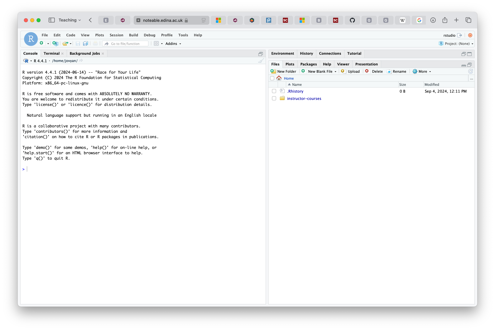
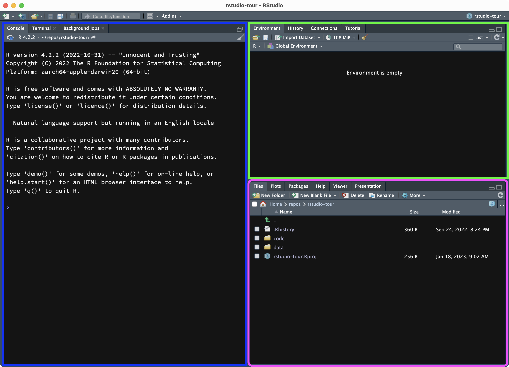

count(verb_org)# A tibble: 1 × 1
n
<int>
1 630Stefano Coretta
You can find the slides of Session 1 here.
If you follow the instructions correctly, RStudio running R should open in your browser and look like this.

RStudio and R are not the same thing. The “engine” that reads, plots, analyses data is R and you do that through RStudio.
R is a programming language.
We use programming languages to interact with computers.
You run commands written in a console and the related task is executed.
RStudio is an Integrated Development Environment or IDE.
It helps you using R more efficiently.
It has a graphical user interface or GUI.
When you open RStudio, you can see the window is divided into 3 panels (see figure below, note there might be differences in colour/layout):
Blue (left): the Console.
Green (top-right): the Environment tab. This panel is collapsed when you open RStudio but if you click on Environment it will expand.
Purple (bottom-right): the Files tab.

The Console is where R commands can be executed. Think of this as the interface to R.
The Environment tab lists the objects created with R, while in the Files tab you can navigate to folders to get to files and open them in the file Editor.
RStudio in your browser runs on a Noteable server. You can upload files to the server through RStudio to be able to read them in R and process them further.
In this tutorial, we will use data from Brentari et al 2024. This study looked at the organization of verb meaning in Lengua de Señas Nicaragüense (LSN). Here’s the abstract (feel free to check out the paper if you would like to know more about the study).
One structural dimension that varies across languages is the simultaneous or sequential expression of meaning. Complex predicates can layer meanings together simultaneously in a single-verb predicate (SVP) or distribute them sequentially in a multiple-verb predicate (MVP). We ask whether typological variability in this dimension might be a consequence of systematic patterns of diachronic change. We examine the distribution of markers of agency and number within the verb phrase (the predicate) in the earliest stages of a young, emerging sign language in Nicaragua, Lengua de Señas Nicaragüense (LSN), beginning with homesign systems like those from which LSN originated, and progressing through two decades of transmission to new learners. We find that: (i) LSN2 signers are more likely to produce MVPs than homesigners or LSN1 signers; (ii) in the MVPs they do produce, homesigners and LSN1 signers are more likely to produce predicates that mark both agency and number simultaneously on at least one of the verbs; LSN2 signers are just as likely to produce sequences with verbs that mark agency and number in sequentially separate verbs. We discuss how language acquisition, modality, and structure, as well as specific social factors associated with each of the groups, play a role in driving these changes, and how, over time, these patterns of change might yield the diversity of forms observed across spoken and signed languages today.
First, download the ZIP archive containing the data to be uploaded (the ZIP also has other data you will use later). You can download the ZIP archive by clicking on this link.
Now go to RStudio and in the Files panel click on “Upload”. Navigate to where the ZIP folder is on your computer and upload it.
You should then see a data/ folder in your Files panel.
Since RStudio and R are two different things, uploading data to the server is not sufficient. We need to tell R to read the data and where to find it.
Before we can read the data, we need to attach the tidyverse packages. These are packages that provide R with extra functionality, among which reading data. You can learn more about packages after the workshop by reading this entry: R packages.
We will be writing R code to read and plot the data. The simplest way to do this is to type code in the Console and press ENTER, but instead we will write code in an R script and run code from the R script.
The library(tidyverse) code will attach the necessary packages. Now we can finally read the data in R.
A very common step in quantitative data analysis is to get counts for different things in the data.
The most basic count is just how many observations there are in the data: this count is simply the number of rows in the data. You can see the number of rows next to the data name in the Environment tab: they are called “observations”. The verb_org data has 630 observations.
There is also R code that can return the number of rows/observations. This is the count() function.
Here is the code again, with the output you will see in the Console after you run the code.
The number printed in the console is 630, the number of rows in the data.
The count() function simply counts the number of rows in the data you specify within parenthesis. Here, we put verb_org so the function simply returns the number of rows in that data.
But count() is not limited to that. It can also count the number of rows depending on values in columns in the data. For example, we can count the number of rows depending on the Group column.
This column has three possible values: homesign (for signers that learnt signing at home), NSL1 (for fist-generation signers that learnt from homesigners) and NSL2 (for second-generation signers that learnt from first-generation signers).
To obtain the number of rows in the data based on Group you can simply specify the Group coloumn, like so:
# A tibble: 3 × 2
Group n
<chr> <int>
1 NSL1 237
2 NSL2 208
3 homesign 185A table is printed, with two columns:
Group with the group value.n with the number of rows for each group.What if we want to know the number of rows per participants? There is catch with this data: the column Participant contains participant IDs, but alas the authors re-used IDs across groups. So there is a participant 1 for homesigners, NSL-1 and NSL-2.
To be able to count the rows per actual participants, we need to specify both the Group column and the Participant column, like so:
# A tibble: 12 × 3
Group Participant n
<chr> <dbl> <int>
1 NSL1 1 50
2 NSL1 2 62
3 NSL1 3 63
4 NSL1 4 62
5 NSL2 1 47
6 NSL2 2 45
7 NSL2 3 54
8 NSL2 4 62
9 homesign 1 35
10 homesign 2 32
11 homesign 3 57
12 homesign 4 61You can see that there are four participants in each group (participant 1, 2, 3, 4). Some participants have more observations than others.
Now try it yourself, write code to get the number of rows within each group depending on the value of Num_Predicates. This column has two values: single for single predicate, and multiple for multiple predicates.
You should list both columns in the count() function, separated by a comma.
So these are the count of observations by number of predicates for each group.
# A tibble: 6 × 3
Group Num_Predicates n
<chr> <chr> <int>
1 NSL1 multiple 45
2 NSL1 single 192
3 NSL2 multiple 103
4 NSL2 single 105
5 homesign multiple 67
6 homesign single 118It is interesting to note that homesigners have a higher number of single predicates cases than multiple predicate cases (118 vs 67). The difference between single and multiple predicates increases in NSL-1 signers (192 vs 45), but it drops again in NSL-2 signers, where it is basically 50-50 (105 vs 103)!
Counting is a powerful statistical tool and R makes it so easy!
In the next tutorial, you will learn how to plot data. You will also practice what you have learnt using new data on the endangerment status of the languages of the world!
Feel free to practice more in your own time before we meet again next week.